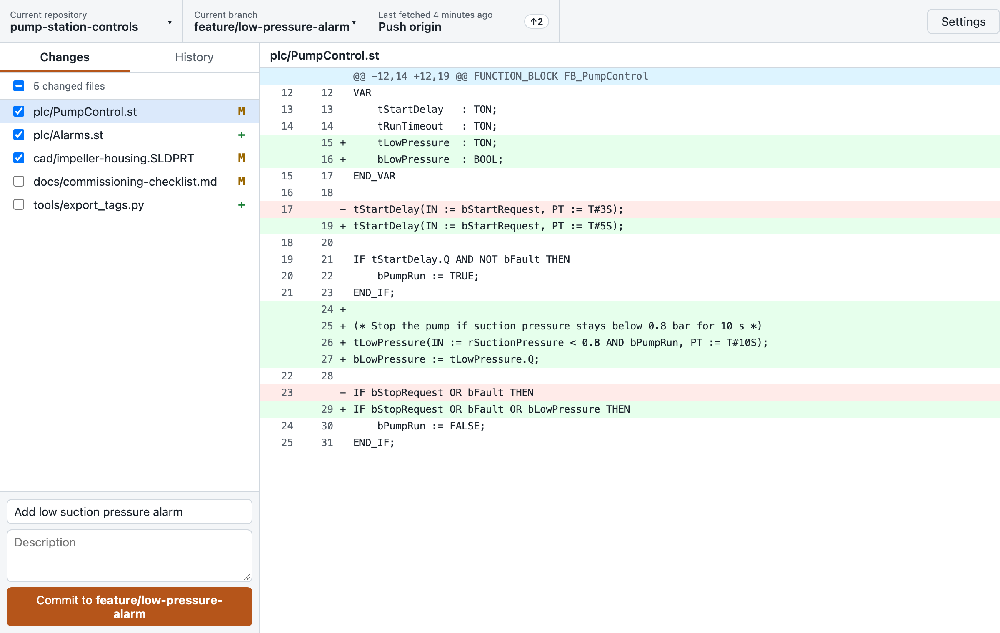
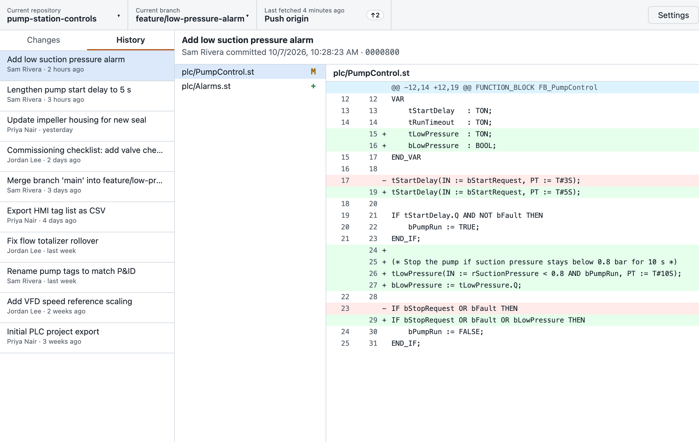
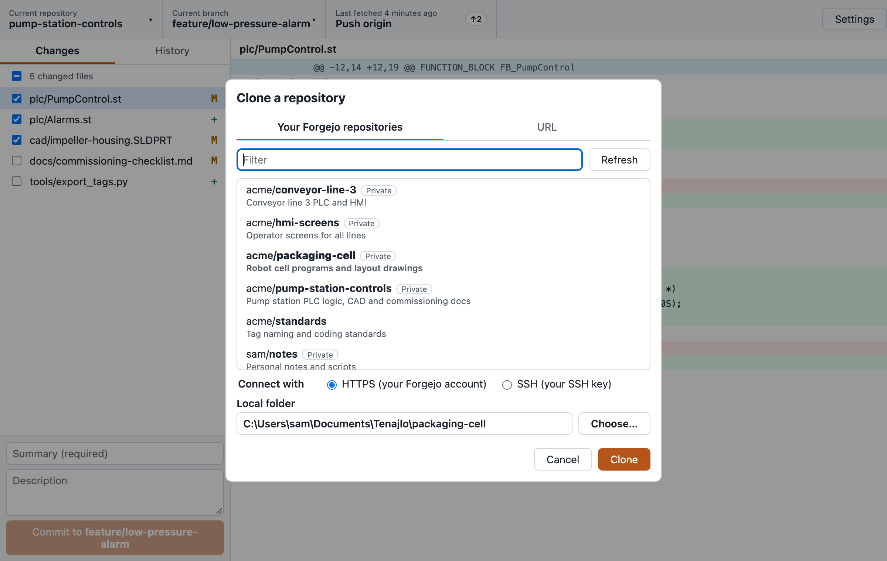
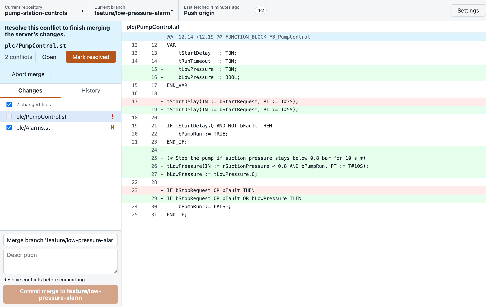

Sign in once
Paste a Forgejo access token and you're done. It's kept in Windows Credential Manager, the macOS Keychain or the Linux Secret Service, and HTTPS just works from then on.
Tenajlo is a free desktop app for working with repositories on your own Forgejo server. Get a copy of a project, save your changes and share them with your team, without learning the command line.
Windows 10/11 first; also runs on Linux and macOS. Apache 2.0.

Paste a Forgejo access token and you're done. It's kept in Windows Credential Manager, the macOS Keychain or the Linux Secret Service, and HTTPS just works from then on.
See every repository you can reach, including your teams', and clone it over HTTPS or SSH in two clicks.
Tick the files to include, read exactly what changed, write a summary, commit. Made a mistake? Undo it. Discarded files go to the Recycle Bin.
The toolbar always shows the next step: publish, pull or push, with progress. When you and a teammate both changed a branch, Tenajlo offers to merge.
CAD models, PLC archives and drawings go through Git LFS automatically. Git and Git LFS come with the Windows installer.
See which files clash, open them in your editor, mark them resolved, or undo the merge entirely. No cryptic messages.



Tenajlo 1.0 is in final testing. The Windows installer will appear on the releases page. Until then, you can build it from source.
Built and tested for Forgejo; Gitea servers use the same API and may work too. Needs Git 2.40+ and Git LFS on Linux and macOS; Windows includes both.